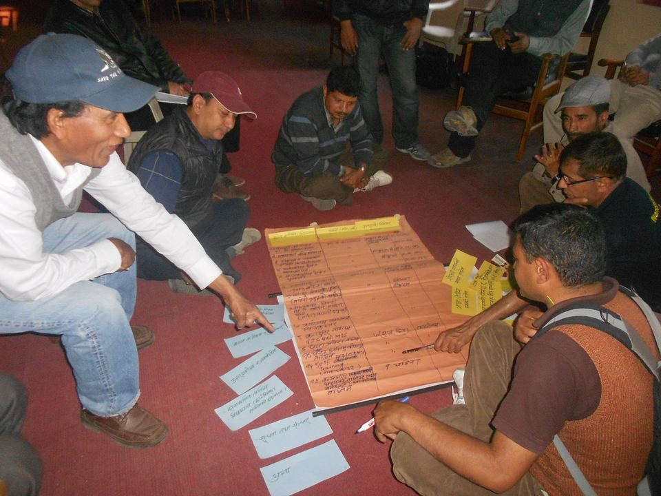

Tourism as a “dream industry”

Tourism is driven by what people feel and seek. It is subjective, and visitors keep searching for unique natural and cultural experiences.
These are the findings and philosophy of my doctoral thesis, Econometric Modulation of International Tourism Development in the Kingdom Nepal for Sustainable Development: Resources Management, Socio-econometric Modulation and Market Promotion (Sofia, 1993).
Philosophy and economic view
- Philosophy. Tourism is driven by what people feel and seek.
- Physical advantage. Nepal’s dramatic, varied geography and global location make it ideal for vibrant international tourism. Tourism is a powerful catalyst for development, from the local to the national economy.
- Poverty reduction. Tourism is a flexible tool for reducing poverty when resources are managed well and activities are sustainable.
Marketing and opportunities
Nepal is seen worldwide as a mystical, exciting and exotic destination: a dreamland for mountain enthusiasts, a cultural showcase for seekers and a spiritual home for the faithful.
Tourism is a “dream industry”. It sells a fantasy, and in a world of imagination the potential is endless.
The keys to long-term success are turning long-term visions into clear, actionable missions and marketing them well in a constantly changing industry. Tourism offers:
- Jobs and income
- Connection to remote areas
- A better standard of living for communities
- Support for related industries
- More foreign currency earnings
- Conservation of natural and cultural heritage
- Protection of ecological biodiversity
Challenges and recommendations
Tourism is linked to sustainable development. Managed well, it can lead in resource management, meeting economic, social and aesthetic needs without harming cultural integrity, ecological processes or biodiversity.
Nepal relies heavily on international tourism, but the industry is volatile and vulnerable because of:
- Centralism, with too much focus on certain areas
- Seasonality, with too much reliance on specific times of the year
- Inadequate infrastructure
To stabilize the industry for the long term, government and the private sector must work together with sensitivity and strong coordination. The main recommendation is a genuine, complete and integrated tourism plan that includes:
- Progressive decentralization
- Effective resource conservation and mobilization
- Strong people’s participation
- Clear political commitment backed by effective laws and decrees
- Targeted marketing
The essential “software” is awareness, education and ecological consciousness to improve product quality. The final goal is to bring tourism products and services up to global standards, raise the country’s “Touro-Dollar” income and establish international tourism as a highly effective sector of the Nepalese economy.